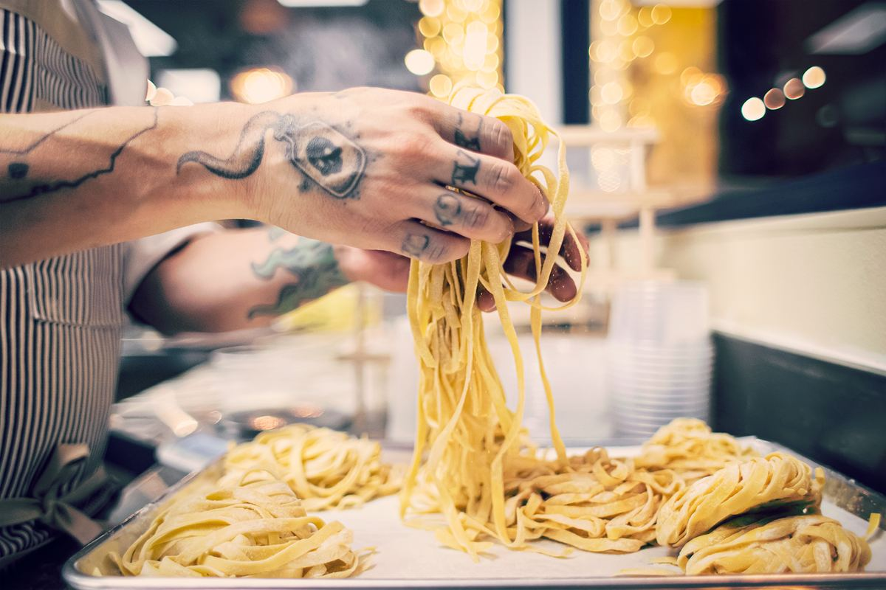

Menus
The Menus
Our chef’s Italian creations strike a balance between tradition and creativity. Please let your server know of any allergies.
Cena
Dinner
Our Italian dinner menu is meant to be enjoyed in courses.

Sharables
Perfect for sharing amongst the table
- Grilled Bread & Butter5grilled bread and butterGFV
- Soup of the Day10daily soup and grilled breadGFV
- Classic Bruschetta8roma tomato, basil, garlic, evooGFVVegan
- Whipped Ricotta Bruschetta10truffle oil, balsamic, lemon zest, mintGFV
- Brie Bruschetta12brie, fig, green apple, balsamic glaze, black saltGFV
- Goat Cheese Bruschetta14goat cheese, speck, arugula, truffle oil, balsamic glazeGF
- Savory Garlic Zeppoli16garlic confit, grana padano, marinara, whipped ricottaV
- Calamari18fried calamari, roasted chili aioli, lemon, spring mix
- Meatball Skillet18pork and beef meatballs, marinara, whipped ricotta, baguette
- Scampi20shrimp, artichoke hearts, olives, sun-dried tomatoes, chile oil, grilled breadGF
- ’Nduja Mussels24spicy white wine broth, shallot, butter, grilled breadGF
- Antipasto Italiano26salami milano, speck, soppressata, grana padano, truffle moliterno, havarti, marinated olives, crostiniGF
Salads
Any of the following proteins can be added to your salad: anchovies +4, grilled chicken breast +6, 4 oz salmon filet +10, 4 grilled shrimp +12, chicken cutlet +12, 1 scallop +14
- Caesar12chopped romaine, caesar dressing, focaccia croutons, grana padano, cracked black pepper · add anchovies 4 · add chicken 6 · add salmon 10GFV
- Simple Greens14spring mix, cherry tomatoes, olives, onions, pecorino romanoGFV
- Beet & Burrata Salad16citrus marinated golden beets, burrata, spring mix, balsamic, fresh mint, lemon zest · add chicken 6 add salmon 10GFV
Fresh Pastas
Our handmade pastas are a medium, but decadent serving. Any of the following proteins can be added to your pasta: anchovies +4, italian sausage +4, burrata +4, grilled chicken breast +6, 4 oz salmon filet +10, 4 grilled shrimp +12, chicken cutlet +12, 1 scallop +14
Gluten free fettuccini or vegan, gluten free gnocchi available to substitute for any of our pastas.
- Alfredo16cream, grana padano, pecorino romano, garlic, tagliatelleGFV
- Vegan Caprese20vegan gnocchi, garlic, tomatoes, basil, lemon, balsamic, evoo · add burrata 4GFV
- Gnocchi24spicy 'nduja cream sauce, gorgonzola, pecorino romanoGF
- Spaghetti & Meatballs26pork & beef meatballs, marinara, grana padano
- Tagliatelle26grilled chicken, basil & pine nut pesto, grana padanoGF
- Pappardelle Ragu28slow cooked lamb ragu, pecorino romano
- Sacchetti28wild mushroom filling, marinated mushrooms, brandy herb cream sauce · add italian sausage +$4V
- Orecchiette28sweet & spicy italian sausage, broccolini, crushed red pepper
- Seafood32mussels, shrimp, spicy ‘nduja and white wine broth, shallot, butter, tagliatelle noodles · add 1 scallop +14GF
- Lasagna34pork & beef ragu, ricotta, mozzarella, basil
- Bucatini42seared sea scallops, white wine, butter, capers, shallot, garlic, parsley, lemon zestGF
Secondi · Second Course
- Chicken Parmesan34breaded chicken cutlet, spaghetti, marinara, house mozzarella
- Beef Tagliata Salad38garlic rosemary marinated flat iron steak, arugula, gremolata dressingGF
- Pork Osso Buco38braised bone-in pork shank, rustic tomato sauce, grana padano add tagliatelle noodles 8
- Pan-seared Salmon38scottish salmon, creamy orzo, spinach, mascarpone, lemon, fried shallotsGF
- Filetto688 oz filet mignon, butternut squash ravioli, peppercorn cream sauce SURF & TURF*: add 4 grilled shrimp +12, add 2 scallops +28
GF can be made gluten friendly · V vegetarian. Please let your server know of any allergies.
*Consuming raw or undercooked meats, poultry, seafood, shellfish, or eggs may increase your risk of foodborne illness.
Pranzo
Lunch
Served from noon to five, daily.
Lunch Specials
- $22 Lunch Special22Choice of lemonade or ice tea, salad or sandwich, 2 zeppoli or 1 cannolo
- Savory Garlic Zeppoli16garlic confit, grana padano, marinara, whipped ricottaV
- Mussels & Fries24spicy ‘nduja broth, shallots, butter, grana friesGF
Salads & Sandwiches
Sandwiches come with choice of fries or greens sub a bowl of soup +5
Add any of the following proteins: anchovies +4, italian sausage +4, grilled chicken breast +6, 4 oz salmon filet +10, 4 grilled shrimp +12, chicken cutlet +12, 1 scallop +14
Gluten free bread available upon request.
- Chopped Caesar Salad12romaine, grana padano, fresh croutons, cracked pepper · add anchovies +4, chicken +6, grilled shrimp +12, salmon +12GFV
- Beet & Burrata Salad14orange marinated golden beets, burrata, spring mix, balsamic, mint, lemon zest · add chicken* +6 add salmon* +12GFV
- Grilled Chicken Salad16spring mix, tomatoes, shallots, castelvetrano olives, mozzarella, basil crema, grilled chicken* · sub salmon +6GF
- Caprese Sandwich16tomato, mozzarella, pesto, arugula on grilled bread · add chicken* +6, grilled shrimp* +12, salmon* +12GFV
- Meatball Sandwich16pork & beef meatballs, marinara, provolone on grilled bread*
- Chicken Parmesan Sandwich16breaded cutlet, marinara, mozzarella, arugula on grilled bread*
- Italian Sub18salami milano, speck, soppressata, provolone, mixed greens, sundried tomatoes, evoo, balsamic on grilled bread
Pastas
Come with grilled bread.
Add any of the following proteins: anchovies +4, italian sausage +4, burrata +4, grilled chicken breast +6, 4 oz salmon filet +10, 4 grilled shrimp +12, chicken cutlet +12, 1 scallop +14
Gluten free fettuccine or vegan, gluten free gnocchi available upon request.
- Alfredo16cream, grana padano, pecorino romano, garlic, tagliatelleGFV
- Caprese Pasta20vegan gnocchi, olive oil, tomato, balsamic glaze · add burrata +4GFV
- Gnocchi22spicy ‘nduja cream sauce, gorgonzola, pecorino romano*GF
- Spaghetti & Meatballs24pork & beef meatballs, marinara, grana padano
- Chicken Pesto Tagliatelle24grilled chicken, basil & pine nut pesto*GF
- Pappardelle Ragu26slow-cooked lamb ragu, pecorino romano*GF
- Ravioli26butternut squash, sherry peppercorn cream sauceV
- Sacchetti26wild mushroom filling, marinated mushrooms, brandy herb cream sauce · add italian sausage* +4V
- Orecchiette26sweet & spicy italian sausage, broccolini, crushed red pepper*
- Seafood Pasta30mussels, shrimp, white wine ‘nduja broth, shallot, butter, tagliatelle* · add 1 scallop +14GF
Entrees
- Pan-seared Salmon38scottish salmon, creamy orzo, spinach, mascarpone, lemon, fried shallotsGF
- Beef Tagliata Salad38garlic rosemary marinated flat iron steak, arugula, gremolata dressingGF
GF can be made gluten friendly · V vegetarian. Please let your server know of any allergies.
*Consuming raw or undercooked meats, poultry, seafood, shellfish, or eggs may increase your risk of foodborne illness.
Dolci
Dessert & Digestivi
Dolci · Desserts
- Affogato8gelato with espressoGF
- Gelato & Sorbet10choice of three daily flavorsGF
- Zeppoli14Italian donuts, powdered sugar, cinnamon sugar, whipped cream
- Chocolate Torta14dark chocolate ganache, whipped cream, rum-caramel sauceGF
- Cannoli14strawberry cheesecake & chocolate pistachio
- Tiramisu16lady finger, coffee, rum, mascarpone
- Midnight in Milano16outfitters vodka, amarula, creme de cacao, chocolate drizzle
- Espresso Martini Affogato20outfitters vodka, borgetti, vanilla liqueur, espresso vanilla gelato
Caffè · Hot Beverages
- Espresso5
- Americano5
- Hot Tea5
- Latte6
- Cappuccino6
- Hot Chocolate6
Digestivi
- Limoncello12
- Amaro12
- Grappa Italiana12
- Nocino Walnut12
- Amarula12
- Disaronno Velvet12
- Disaronno14
- Sambuca16
- Green Chartreuse16
- Amari Flight18
- Fanti | Vinsanto18
Aperitivo
Happy Hour
Daily, 3pm – 5pm
$10 Cocktails
- Old Fashioned10
- Martini10gin or vodka, dolin dry vermouth, orange bitters, olive or twist
- Margarita10
$9 House Wine
- House Bianco9Our house white wine
- House Rosato9Our house rose wine
- House Rosso9Our house red wine
- Moscato9
- Frico Lambrusco9
Snacks
- Warm Olives & Ciabatta8castelvetrano and kalamata
- Grana Fries10
- Bruschetta Sampler12One slice of our four bruschetta types: classic, brie, whipped ricotta, goat cheese
- Savory Zeppoli12garlic confit, grana padano, marinara, whipped ricotta
Specials
- Martini & Fries18House martini served with grana fries
- Chef's Board20salami milano, speck, soppressata, grana padano, truffle moliterno, havarti, marinated olives, crostini
- Pitcher of Spritz30Choice of spritz in a pitcher to share
Bambini
Kids Menu
For the Little Ones
- Noodles10spaghetti noodles with choice of red, white, or butter sauceGFV
- Spaghetti & Meatball12spaghetti noodles, house marinara, meatball
- Chicken Nuggets & Fries10chicken nuggets, waffle fries, side of ketchup
GF can be made gluten friendly · V vegetarian. Please let your server know of any allergies.
*Consuming raw or undercooked meats, poultry, seafood, shellfish, or eggs may increase your risk of foodborne illness.